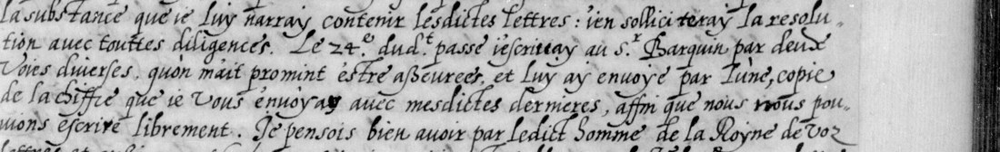

George Lasry’s decipherment
George Lasry’s report on this item, as he sent it on 24 October 2026 (PDF), in its own order and wording. The decipherment, the translation and the reconstruction of the key are his, made with ChatGPT Astra 6 and Anthropic Opus 5.5. This project’s own checks follow further down.
Français 3198
Contents: Reports on Batory, divisions among the Polish nobles, imperial diplomacy and peace with the Turks; outward friendliness conceals political hostility.
7/7 pages transcribed; 6/6 cipher pages deciphered
- Ciphertext-only:
- Yes
- Sender:
- Desiderio L’Abbé
- Recipient:
- Duke of Nevers
- Year:
- 2 March and 2 May 1577
- Key:
- 30 codes, 27 letter codes, 0 in nomenclature, 1 null, 2 unidentified
- Ciphertext:
- 533 elements, 526 identified; 3 gaps in the binding. Duplicate: 43 elements, all identified; 2 gaps in the binding

Excerpt and Translation
f63r, passages A21–A23 — 63r

Excerpt
Les Polonois sont diuises comme ilz estoient, et iacoit qu'ilz monstrent bon uisage au batori aux coeurs est le contraire, pour certain, comme j'entend non seulement dudict uuarsauicio mais aussi de plusieurs aultres.
Translation
The Poles remain divided as before; although they show Batory a friendly face, in their hearts they feel the opposite, as I hear not only from the said Warsawicio but also from several others.
f75r, five complete body lines

Excerpt
Ledict Weber s'en est allé à Auguste pour voir une signorie qu'il ait achepté dernierement en ces quartiers là, appellée Rombals, et retournera à Vienne quand sa Majesté y sera arrivée. Il suivra encores la Court le temps de deux ans pour estre versé aux affaires d'icelle mais plusieurs ne pleureroient s'il n'i [r]etourno[i]t iamais.
Translation
The said Weber has gone to Augsburg to see a lordship he recently bought in those parts, called Rombals, and will return to Vienna when His Majesty arrives there. He will continue following the court for two years to become versed in its affairs, but many would not weep if he never returned there.
Readable text
The full text, folio by folio, as in the report. Bold marks the passages deciphered from the cipher; the rest is the clear text of the letter. Question marks are the report’s: [?] or a bare ? for a sign or group left unread, a ? after a word for a doubtful reading.
Français 3198
f62r
Monseigneur.
J'ay le 22e du passé presenté les deux vostres lettres voyans que non seulement le gentilhomme mentionné à mes dernieres du 5e du passé n'estoit par chemin, mais qu'on n'esperoit qu'il fust pour sitost s'encheminer pour cause des nouveaux troubles de France, et les aurois presentées incontinent que l'homme de la Royne arriva icy retournant de Court, que fut le xij, mais ne me fut possible mettant le xe survenir une fievre qui me tint garder la chambre 19 jours. Je parlay hier au seigneur Vicechancelier pensant qu'il auroit leues lesdictes lettres, mais cestant excusé ne luy avoir esté possible pour les empeschemens grands qu'il avoit eu, le suppliai les vouloir veoir et proposer le plustost qu'il luy seroit possible, chose qu'il promist faire monstrant avoir plaisir de la substance que je luy narray contenir lesdictes lettres ; j'en solliciteray la resolution avec toutes diligences. Le 24e du passé j'escrivay au seigneur Barquin par deux voies diverses qu'on m'a promiz estre asseurées, et luy ay envoyé par l'une copie de la chiffre que je vous envoyay avec mesdictes dernieres, affin que nous nous pouvions escrire librement. Je pensois bien avoir par ledict homme de la Royne de vos lettres et aussi argent, comme m'escrivoit ainsi estre Monsieur de Vulcob par sa lettre du xixe de Janvier, mais il m'a dict ne luy avoir esté baillé ny l'un ny l'aultre, et ce pour advis.
Le Seigneur Riva partit d'icy deux ou trois jours apres mesdictes dernieres, et le jour d'hier nous que le Seigneur Prospero Gonzaga est en arrivé Ambassadeur qu'on dict seulement pour faire les complimens.
Jacoit que Monsieur le Nonce mondui eust escrit que Dansick se seroit rendue avec les conditions que par mesdictes dernieres je vous escrivis, et aussi par aultre voye il avoit esté entendu le mesme, il n'a neantmoins esté vray, mais bien est la vraye verité, et de ce ay je hier veu lettres dattées de l'unzieme de febvrier à Iuroma en Prusse, que ladicte cité tient fort et ferme, et pour mettre les habitans en division, le Batori avoit le ve dudict febvrier faict publier un Edict par lequel il declaroit que tous ceulx lesquelz dedans le temps de xx jours se partiroient avec leurs femmes, enfans et biens, il les tiendroit pour les siens et de la corone de Pologne, et que passé ledict temps seroient tenus pour Rebelles et ennemys tous ceulx qui se trouveroient dedans ladicte Ville, pour laquelle emporter il ait faict appeler pour le xve du present tous les estats de Pologne leurs commandant de comparoistre en ordre à Wratislavie cité es confins de Prussie à 35 lieues de Wratislavie en Silesie et 20 de Varsovie, pour le bien du Reaulme. Il ne tient au siege dudict Dansick l'avantage de 4 ou 5 mil hommes, desquelz Johan Sborosky est General, avec lesquelz est à environ trois lieues loing dudict Dansky, où ilz sont esté bien battus trois ou quatre fois durant qu'on traictoit desdictes conditions qu'avoient offert ceulx de dedans, mais l'orgueil du Batory et le conseil de l'evesque de Cuiauia, qui vouloient incontinent faire faire une cittadelle dedans la Ville et leur oster tous leurs privileges et franchises, ont tout renversé. Le Comte Conrad de Mansfeldt est entré dedans la Ville avec bon nombre de gens d'armes, lesquelz pourront bien tenir quelque temps, mais estans les
f62v
habitans tous marchans, ne pourront durer long temps, et la Pologne se portera aussi mal cessant le trafficque. J'entend de plusieurs que le dict Batory grandement hai de tous generallement et ainsi bien des sboroschi comme des aultres, pour son grand o[rg]ueil, ne baillant à pas un qui qu'il soit, salve ledict Evesque qui gouverne le tout, donne parolle. Il est demeuré ferme qu'il est à la Diete de Iuroma, avec environ deux cens personnes. L'Infante est à Varsovie fort mal satisfaicte dudict Batory, lequel se monstre fort catholique en effect, car ayant plusieurs annees passées le Senat de Iuroma occupé les biens d'une Eglise collegiale de sainct Lorens de la mesme Ville, aboly le service divin et ceremonies de l'eglise catholique Romaine, il [?] vient qu'il veult ouir la messe, et luy ayant esté respondu qu'il n'y avoit Eglise de catholiques pour avoir esté occupée comme dessus, feit venir à soy ledict Senat, auquel, apres avoir demandé la cause pour laquelle ilz avoient ainsi occupés les biens de ladicte Eglise et dechassés les Ecclesiastiques, fut respondu ce avoir esté faict du temps de Sigismond Roy, et à l'heure d'iceluy et du temps du Roy Estphanus, le tout sera rendu à qui il appartient, et ainsi commanda que le lendemain tous les ornemens de ladicte Eglise qui sont fort precieux fussent renduz et semblablement les revenues d'icelle, chose qui fut mise en execution, et ainsi le lendemain ledict Evesque consacra ladicte Eglise et y celebra la messe avec grand contentement des catholiques.
L'Evesque de Mondeui Nonce du Pape le 15e du passé n'estoit encores parti de Wratislavie, où estoit encores pour se partir le lendemain, attendant le retour du Comte Cristoforo Rozrazes? qu'il avoit envoyé vers l'Archevesque de Gnesna ; il avoit neantmoins commission d'aller trouver ledict Batory, comme il vous aura pleu entendre par mesdictes dernieres, et comme j'ay hier entendu du seigneur uuarsau[i]cio, il sera sollicité affin qu'il s'enchemine le plustost qu'il pourra affin qu'il se treuve à la dicte diete pour uoir de troouer mo[i]en que les affaires de dansqui s'acc[om]modassen[t], pouvant estre la ruine du reaulme et de chrestiente, car ledict Batory s'aydera et des Tartars et des Turcs et encores des Hongrois s'il aura argent, lequel luy default comme il s'entend d'un chacun. Il me vient affirmé que les Polonois ne veulent prendre les armes contre ladicte Dansky, allegans que si ledict Batory leur auroit voulu confirmer leurs privileges, il ne seroit occasion de perdre sa reputation ou de ruiner le Reaulme. Ledict uuarsauuicio est de opinion que ledict de [?]deij pourroit remedier à tout.
Il y a trois jours que sont arrivez un Ambassadeur dudict Batory avec neuf chevaulx et un homme du Beques de Transilvanie, lesquelz eurent hier devant disner audience de l'empereur l'un apres l'aultre en presence des
f63r
conseillers secrets de sa Majesté, et comme j'entend, lesdicts ne sont sinon porteurs de lettres lesquelles, comme j'entend dudict uuasauuicio, sont pour supplier à sa Majesté qu'elle soit contente que le dict Beques puisse prendre femme en hongrie, et pour aussi entendre si l'emperur baillera audict Batory titre de roi pour envoyer uers sa maieste un Ambassadeur, surquoy on tien pour certain qu'il sera contenté, ains qu'on aura aggreable qu'il soit ami de ceste maison, et combien que ne soit pour son esgard sera pour celuy du turc, avec lequel on s'esforcera, avec tous les moyens possibles, auoir paix, suyvans iceulx l'oppinion de fer[d]inand emperur, et de laquelle par toutes mes lettres avez peu entendre estre le uueber et le trautzen qui gouvernent comme ilz faisoient.
Les Polonois sont diuises comme ilz estoient, et jacoit qu'ilz monstrent bon uisage au batori, aux coeurs est le contraire pour certain, comme j'entend non seulement dudict uuarsauicio, mais aussi de plusieurs aultres.
Ledict uuarsauicio, en presence d'un serviteur de l'empereur qui est praticien des affaires de moscoui[e] et de pologne, disoit hier avoir entendu pour certain que Riga? et Revel estoient es mains du Moscovite, s'ayant l'une desdictes rendue de sa propre volonté et ayant l'aultre esté surprinse, et que ce estant, comme il le croyoit, la Russie se rendroit incontinent tant pour la Religion grecque qu'ilz tient comme pour estre le Palatin de Russie homme qui tourne à tous vents, et que par consequence la Lituanie se porteroit mal.
La plus grand parte des Polonois tient que ledict Batory ne soit pour vivre long temps, pour autant chacun s'ayde le mieux qu'il peult. Et jusque à maintenant le seigneur Warsawicio ha eu de l'empereur une pention de cinq cens talars par an soit resident ou le veult, pourveu qu'il ne face contre ceste maison, mais comme de luy mesme j'ay entendu, il ait esperance qu'il sera remis à sa Patrie, surquoy attend il icy resolution de Pologne, laquelle venue, il se partiroit d'icy incontinent pour les grandes despenses qu'il y faict. Le Sborosky partit d'icy avec cinq cens talars pour son voyage et espoir, nil d'assignation en Silesie au seigneur Lasky. Lasky n'a esté encores rien baillé de certain, mais ce pendant on luy baille quelque somme d'argent toutes les sepmaines pour se pouvoir entretenir, lequel faict la court aux florentins, et ledict Warsawicio
f63v
aux sauoiens, en cas de nouuelle election. Le referendaire n'alla en Pologne, ains il s'attend icy de jour à aultre, et y est semblablement le Palatin Calisiense tant pour estre aydé comme pour r'avoir ce qu'il fut levé à son frere sur la Jurisdiction de l'Abbaye de Fulde retournant de France.
Il me vient dict que le Comte Hierome Lasroslof? soit allé vers ledict Batory au lieu de venir à Wratislavie.
Combien qu'on ay dict jusque à present que l'empereur passeroit d'icy en Lusatie, Silesie et Moravie, il m'a neantmoins ce matin esté dict qu'il iroit premierement à Vienne et en Hongrie, mais on ne scet encores s'il se partira incontinent apres les obseques de son pere, qui seront le xxe du present, ou incontinent apres les Pasques, mais est il certain que la Majesté de l'Emperatrix et la Royne Blanche demeurent icy.
L'Empereur n'ait demandé aux estats de ce Reaulme sinon deux cens mil talars chacun an pour deux ans, pour l'ayde des confins de Hongrie, et que les imposts ordinairs soient prolongés pour deux aultres ans, et si ce qui est à payer pour le temps passé. Il ait davantage exhorté lesdicts estats à considerer où et comment on feroit la Riviere appellée Albis navigable par tout le Reaulme. Item comment on pourroit lever l'abus des Vestemens et Banquets qu'on faict superflues en ce Reaulme. Sur lesquels articles lesdicts estats doivent ce jourd'huy bailler derniere resolution à sa Majesté Imperiale, et beaucoup plus brief qu'on ne pensoit, car sadicte Majesté en nulle façon n'ait voulu ouyr parler de Religion disant estre chose qu'elle ne pouvoit ny vouloit au detriment ny seroit pour le bien du Reaulme y changer quelque chose ; mais que si elle estoit recherchée de quelque chose qui toucheroit le bien et repos du Reaulme, elle seroit trouvée tres facile, et ainsi n'en ait on puis apres ouy rien aultre.
? aux confins de ce Reaulme au ? forteresses? et comment on feroit.
Il y ait 15 jours que le Comte d'Aremberg arriva icy envoyé de la part de Don Jehan vers ces Majestez pour faire les complimens, et quattre jours apres y arriva le Comte de Galves, Gendre du Seigneur de Dietericstain, maistre d'hostel de l'empereur, pour se jouir de la Coronation de sa Majesté Imperiale faicte il y ait plus d'un an, et y on attend un aultre de plus grande qualité pour causes de condoleances. Ilz sont tous deux logés au logis du Marquis de Alacan Ambassadeur ordinaire du Roy Catholique en ceste Court, lequel dict se devoir partir bientost d'icy et que son successeur doibt ja estre arrivé à Genoa.
Ledict d'Aremberg doibt en brief passer plus oultre à Vienne et à Gratz pour le mesme effect.
Le prisonnier Gandolfi est encores jusque à ce jourd'huy audict Gratz, s'attendant les saufconduicts et lettres de passage pour Italie.
f64r
Il y ait ia cinq jours que icy est venue nouvelle par corrier expres de Flandre comme le 19 du passe la paix fut publiee a Bruxelles, mais plusieurs ne le croyent, pour ce que on n'ait encores commande aux colonels de surceoir les levees de gens de guerre.
Les deux Ambassadeurs de l'Empereur pour prester l'obeissance au Pape se sont encheminez pour Italie, le seigneur Flac? prieur de l'ordre de sainct Jehan, du lieu de sa residence, qu'est ordinairement a six ou 8 lieues de la de Kaisers Lauttern?, et le Docteur Tomer conseiller Aulique de l'Empereur d'icy.
Il est vray que le Pape ait donne a l'Imperatrix cent mil escus des fruicts de l'Archievesche de Toledo, et pour ce que le Pape entendoit des fruicts a venir, la Majeste de ladicte Imperatrix ait envoye l'homme duquel je vous escrivois par mesdictes dernieres, pour prier sa sainctete qu'ilz soient des fruicts ia escheuz pour les grands besoings que sa Majeste en a presentement.
L'Ambassadeur du Roy de Suetie duquel je vous escrivay par mesdictes dernieres est encores icy, et traictera demain a disner le seigneur Lassky; il ait ia eu lettres de recommandations de ceste Majeste Imperiale au Roy d'Espaigne comme il les desiroit affin de pouvoir avoir ce que je vous escrivay aller chercher a Naples.
L'on m'ait asseure que entre ledict de Suetie et Batory est confederation.
Il y ait quattres jours qu'est icy arrive un serviteur de l'ambassadeur retournant de Constantinoble, duquel on ait entendu que la paix certainement continuera entre sa Majeste Imperiale et le Turc et qu'il n'arme ceste annee, ny moins est certaine la guerre contre le Roy de Perse.
De Prague le 2e mars 77. Post scriptum n'ayant peu envoyer les presentes par le dernier corrier, je vous puis faire certain que me affaire ait este proposee et resolue au conseil aulique, mais n'en ay peu avoir resolution jusque avant qu'en sera faicte relation a l'empereur, qui sera demain; qu'est ce qui est survenu depuis ledict deuxiesme jusque a ce 7e.
f75r
Monseigneur.
Je ne vous ay escrit depuis mes lettres du 18 et 19 d'Apvril pource que nous sommes estes tousjours par chemin, et estant arrivé icy ay faict instance vers l'Empereur pour avoir la Citation puis que le Seigneur Duc de Mantou n'ait respondu, et pensois bien ce jourd'huy avoir resolution en la Requeste que pour ceste cause je presentai le 30e du passé, mais n'ayant esté Conseil ce sera pour le Lundi ou mardi.
Jusque à maintenant je n'ay receu response à tant de lettres escriptes à Messieurs Borsini, de quoy je m'esmerveille grandement luy ayant par divers voyes de la façon que si on me octroyoit la Citation comme je l'ay demandé, je ne saurois exprimer les fructz escheus à ce jour, pource que la somme ait esté laissée en blanc, comme je vous escrivois ja, ny moins ay l'assignation ou mandement faict par Monsieur le Duc de Mantou à ses Ministres de payer tous les ans la somme de 2000 escus, ny la copie de la lettre du mesme Duc aux Presidens et Conseilliers de Montferrat pour ceste cause escripte, ny aucuns instrumens de quittances faictes par vostre procureur avec la procuration du procureur qui ait receu l'argent et a faict lesdictes quittances, lesquels munimens je debvrois neantmoins avoir. Je ne cesseray de luy escrire par toutes les occasions qui me viendront pour une fois avoir quelque lettre de luy. Bien est vray que les Marchans Milanois des Pasques n'ont suivis la Court, mais s'en sont allez à Vienne de façon qu'il pourroit estre qu'ilz auroient quelque lettre ; ilz scavent neantmoins que je suis icy, de maniere que je crains que ledict Seigneur ne soit malade ou mort.
Ayant le Docteur Weber renoncé à son office trois jours devant le parlement de l'Empereur, qui fut le 27e d'Apvril, fut incontinent receu à son lieu le docteur Vichesius? homme de bien, comme j'en ay peu cognoistre pour le temps qu'il est en ceste Court.
Ledict Weber s'en est allé à Auguste pour voir une signorie qu'il ait achepté dernierement en ces quartiers là, appellée Rombals, et retournera à Vienne quand sa Majesté y sera arrivée. Il suivra encores la Court le temps de deux ans pour estre versé aux affaires d'icelle mais plusieurs ne pleureroient s'il n'i [r]etourno[i]t iamais.
Le 2e du present par la voie de Verdun je vous ay escrit de vostredicte affaire le mesme, mais de nouvelles fort amplement, et vous advisay que si on me octroie la Citation, je n'ay argent pour la faire executer. De Wratislavie ledict 2e.
Vostre treshumble et obeissant Serviteur
f76v
aux affaires de la Court mais plusieurs ne [?] pleureroient s'il n'i [?] retournoit iamais. Ceulx qui sont du Conseil secret suyvans la Court sont les deux Archiducques et les Seigneurs Horach et Trautzen. Les electeurs de Saxe et de Brandebourg sont esté à visiter l'Empereur à Budissine où ilz sejournirent trois jours avec grands contentemens comme ilz monstroient, auquel sa Majesté fit grand honneur les appellant en sa presence et à sa table [?]. Peu auparavant le Nonce du Pape fut venu de Prague où il fut defrayé et par tout le pais du Duc de Saxe ; ce luy fut faict par trois hommes qu'on avoit peu sçavoir [?] à un Ambassadeur de Prince estranger ou protestant.
Le 9e de May le Duc de Brigue en Silesie reçeut les Roynes de France son filz avec la fille du Marquis de Anhalt, auxquelles [?] ainsi esté le filz dudict electeur de Brandebourg accompagné de trois cens chevaulx bien en ordre ; et est hier icy arrivée la lettre de l'empereur le 24e dudict passé, ledict filz de Brandebourg [?] ledict d'Anhalt vindrent à Halle, sa Majesté avec lesquels disnerent et sopperent le jour de la Pentecoste, aussi accompagner à la messe et au sermon, mais ne demeurerent à l'une ny à l'aultre, mais se promenerent à l'entour de l'eglise jusque à tant que l'office fut finy.
Il n'y est que le seigneur Roy de Boheme soit esté receu avec tant de pompes que ces icy Empereurs, ayant rencontré environ trois mil chevaulx que l'ay [?] et [?] mil pietons fort bien en ordre ; et fut faicte une porte triumphale fort sumptueuse sur laquelle estoient deux Giants armés tenant chacun d'iceulx une lance à la main avec un pendant et les armes de Boheme et de Silesie, lesquelz faisoient reverence à sa Majesté non plus ny
At a glanceCiphertext-only break · complete
- The letters
- Desiderio l’Abbé to the duke of Nevers: Prague, 2 March 1577, and Breslau, 2 May 1577 (two copies).
- Where
- BnF français 3198, fol. 62 and fols. 75–76 (Gallica views 63–66, 77–79).
- The cipher
- A numerical substitution with one- and two-digit codes, several codes for some letters, and 6 as the word separator. Both letters use the same key.
- How it was read
- Angus Robinson (pull request #20, October 2026) recovered the key from the ciphertext alone, starting from a guess that three similar strings meant l’empereur, and deciphered all 31 runs. It was verified for this project on 7 October 2026 and independently by George Lasry.
- Credit
- Solution by Angus Robinson; verification by George Lasry.
- Still open
- Two figures under blots (f64r03 and f64r08) are restored from context (grade C). Sections 01–05 below keep the 23 September attempt, made before the solution; where they say the cipher was unread, the key of PR #20 supersedes them.
01 Two letters, three witnesses
| Document | Images | Cipher evidence |
|---|---|---|
| No. 30, Prague, 2 March 1577; opening on manuscript fol. 62 | Gallica views 63–66 | 29 draft insertions, 834 written digits |
| No. 37, Breslau / Wratislavie, 2 May 1577; fol. 75 | Views 77–78 | Two spans around clear plusieurs, 77 draft digits |
| No. 38, another copy of the May letter; fol. 76 | Views 78–79 | A second cipher witness, without a clear decipherment |
The left side of view 65 repeats the lower portion of view 64 and is not counted twice. The May witnesses substantially repeat the same figures; apparent 53/35 and 13/14 differences remain unresolved. The repository’s inherited folder name, labbe1582, does not give the letters’ date.
The run-by-run inventory records image references, adjacent clear text and draft digits. Its 31 records are transcription aids. Their boundaries do not establish whether the cipher uses single digits, pairs, mixed units, syllables or word codes.
02 Prague: a cipher sent in February
The clear prose concerns imperial-court and Polish affairs, alongside l’Abbé’s correspondence with Nevers. Two details correct the earlier local outline: the opening describes l’Abbé’s own fever and nineteen days confined to his room; view 66 mentions 200,000 talers each year for the stated years for the Hungarian frontier. The full clear-text outline remains provisional and is not a diplomatic edition.
On view 63, l’Abbé describes a recent cipher dispatch. The passage is in clear:
Le 24e dudict passé j’escrivay au Sr Barquin [name provisional] par deux voies diverses […] et luy ay envoyé par l’une, copie de la chiffre que je vous envoyay avec mesdictes dernieres, affin que nous nous pouvions escrire librement.
In substance: on the 24th of the previous month he wrote by two different routes and sent, by one of them, a copy of the cipher previously sent to Nevers, so that they could correspond freely. From the letter’s date this means 24 February 1577. Par l’une refers to one of the routes. The passage reports a dispatch; it does not establish that an enclosure survives or that both target letters use that exact cipher.

A catalogue mirror identifies an earlier letter, BnF français 4695 no. 51, Prague, 5 February 1577, and another of 20 April as no. 55. These provide a specific correspondence trail to inspect. The volume also contains Gaspar Barchino’s letter of 8 August 1575 as no. 25; a connection with the provisionally read name Barquin is only a hypothesis. The earlier letter’s text, enclosures, folio and image number have not been checked: new Gallica requests failed during this attempt.
03 Breslau: a duplicate, deciphered with the key of PR #20

The May letter’s clear prose concerns Nevers’s financial and legal business and a change of office at the imperial court. In the provisional reading, Weber has relinquished office before the emperor’s departure on 27 April, and Vieheuser has taken his place. The cipher follows a reference to Weber’s intention to attend the court for another two years. That context did not supply its plaintext; the cipher is read with the key of PR #20.
The French word plusieurs is written in clear between the two numerical spans. Both copies retain the cipher, so comparing them helps with figures but supplies no independent decipherment. The working transcription of the clear prose and comparison of the cipher witnesses retain their uncertainties.
04 What was tested before the solution (23 September)
The draft transcription was extended from cached scans to every March insertion found. Solvers then tried different divisions of the digits into units, and possible nulls, scored with a language model of French letters. These tests did not determine the cipher system; Angus Robinson’s key (PR #20, 7 October 2026) shows a numerical substitution with one- and two-digit codes, homophones and 6 as the word separator.
- Division into one- and two-digit units by a fixed prefix rule, then constrained substitution searches. A first unrestricted homophonic search converged on repeated letters and was discarded.
- A sweep over ways of dividing the digits into units: 1,566 divisions passed filters on the number of distinct units and on leftover digits, and each was searched with three restarts of 5,000 proposals.
- Six fixed-pair variants and further point-delimited pairing/null treatments, including hypotheses about terminal sixes.
- A search on the May spans alone with a 5-gram language model, keeping the clear plusieurs and imposing the cribs mais…jamais and ne/ni. The cribs did not extend to coherent text, and none of their values is accepted.
On a synthetic pair-substitution control the solver recovered all 538 letters. This tests the program only; it does not show that the historical cipher is of that type. An earlier attempt in this project reported a mismatch with the June 1580 “Chifre avec Madame”; the cached 1584 Nevers symbolic alphabet inspected here likewise supplied no numerical table for these letters. Neither comparison excludes every possible Nevers key.
The experiment record identifies frozen inputs, programs, outputs and the corrected May test. French-looking fragments of solver output were not accepted as plaintext. Failures on an uncertain transcription do not show that the cipher cannot be broken.
Independent solution by George Lasry. On 10 October 2026 George Lasry, working with ChatGPT Astra 6 and Anthropic Opus 5.5, deciphered the same letters independently from the ciphertext alone (526 of 533 elements identified, and all 43 of the duplicate) in his “BnF cipher research”. His reading of f. 75r, mais plusieurs ne pleureroient, agrees with the key from pull request #20. His other BnF results are listed on his contributor card.
05 What remains open
Every cipher insertion is deciphered (key of PR #20; this paragraph dates from the 23 September attempt). The transcription retains two blotted figures, at f64r03 and f64r08, restored from context (grade C); 534 of 536 cipher tokens are read (99.6%). The March and May clear-text files are provisional, with doubtful names and expressions still requiring an editorial pass. Barquin is a tentative (M-grade) name reading; its identification with Barchino is unproved.
The cipher is read, so no further evidence is needed for it. The February correspondence and any surviving cipher enclosure, especially around français 4695 no. 51, would only add context on the correspondence; that lead was not inspected because new Gallica requests failed during the 23 September attempt. There is no verified DECODE record to update, no named key to connect in the key web, and no deciphering replay to show. The destination is known only broadly as France, so no city has been guessed for the atlas.
06 George Lasry’s independent reading
George Lasry sent his own report on Français 3198 (dated 10 October 2026, sent on 13 October; the PDF version reached us on 24 October 2026); it is shown in full at the top of this page (George Lasry’s decipherment). It is an independent reading, made apart from Angus Robinson’s key (PR #20), which remains the reading of record here. His Readable text measures 0.994 of the whole text and 0.982 of the deciphered passages; he translates the excerpts only.
Full texts
The transcription and the decryption of every document on this page, so that the reading can be used and checked. Short files are shown here; all are in the repository.
Nos. 30 (Prague, 2 March 1577), 37 and 38 (Breslau, 2 May 1577): the cipher insertions, AngusRobinson's decipherment (PR #20)
Desiderio l'Abbé reports to Nevers from the imperial court. The March cipher runs concern Poland after Báthory's election (the nuncio of Mondovì, Zborowski, Danzig, "puisse prendre femme en hongrie", the Emperor and the "titre de roi", peace with the Turk; the Poles are divided and show Báthory a good face while their hearts are contrary); the May run follows Weber's resignation: "mais plusieurs ne pleureroient s'il n'y retournoit jamais".
Transcription
L’ABBÉ, 1577 — KEY AND DECRYPTION
Key: a=02/04 b=08 c=01 d=03 e=1/11 f=21 g=31 h=09 i=3/13
l=23 m=33 n=43 o=5/15 p=25 q=07 r=35 s=45 t=55
u=9/19 x=8/18 z=29 space=6
| separates tokens; leading zeroes matter. i includes j/y;
u includes v; uu can represent w. Dots adjoining 6 are ignored.
VIEW 63
https://gallica.bnf.fr/ark:/12148/btv1b9060073v/f63
f63r01
33|5|43|03|1|9|3
mondeui
VIEW 64
https://gallica.bnf.fr/ark:/12148/btv1b9060073v/f64
f64r01
09|02|3|6|03|1|6|55|15|19|45
hai de tous
f64r02
45|08|15|35|5|45|01|09|3
sboroschi
f64r03
15|3+[hidden]|9|11|13|23
o[rg]ueil
f64r04
03|15|43|43|1|6|25|04|35|5|23|23|1
donne parolle
f64r05
45|1|13|31|43|1|9|35|6|9|19|02|35|45|02|9|3|01|13|5
seigneur uuarsauicio
f64r06
25|5|19|35|6|9|5|3|35|6|03|1|6|55|35|15|19|11|35|6|33|15|13|11|43|6|07|19|11
pour uoir de trouer moien que
f64r07
03|04|43|45|07|9|3|6|45|02|01|01|15|35|03|04|45|45|1|43|55
dansqui saccordassent
f64r08
35|1|02|19|[hidden]|33|11|6|1|55|6|03|11|6|01|09|35|11|45|55|3|1|43|55|1
reau[l]me et de chrestiente
f64r09
19|9|04|35|45|02|19|13|01|3|15
[uuarsauicio]
VIEW 65
https://gallica.bnf.fr/ark:/12148/btv1b9060073v/f65
f65r01
03|19|03|13|01|55|6|19|9|02|45|02|19|9|3|01|13|15
dudict [uuasauuicio]
f65r02
25|9|13|45|45|11|6|25|35|1|43|03|35|11|6|21|1|33|33|1|6|1|43|6|09|5|43|31|35|3|1
puisse prendre femme en hongrie
f65r03
45|13|6|23|11|33|25|1|35|1|9|35
si lempereur
f65r04
55|13|55|35|11|6|03|1|6|35|15|13
titre de roi
f65r05
19|11|35|45|6|45|04|6|33|02|3|11|45|55|1|6|19|43
uers sa maieste un
f65r06
02|33|13|6|03|11|6|01|1|45|55|11|6|33|04|3|45|5|43
ami de ceste maison
f65r07
03|19|6|55|19|35|01
du turc
f65r08
02|19|15|13|35|6|25|02|3|18
auoir paix
f65r09
21|1|35|03|13|43|02|43|03|6|1|33|25|1|35|1|9|35
ferdinand empereur
f65r10
23|1|6|9|9|11|08|1|35|6|11|55|6|23|11|6|55|35|02|19|55|29|11|43
le uueber et le trautzen
f65r11
45|15|43|55|6|03|13|19|13|45|1|45
[sont diuises]
f65r12
33|15|43|45|55|35|1|43|55|6|08|5|43|6|9|13|45|02|31|11|6|02|19|6|08|04|55|5|35|3|6|02|19|8|6|01|15|11|19|35|45|6|11|45|55|6|23|1|6|01|15|43|55|35|02|3|35|11
monstrent bon uisage au batori aux coeurs est le contraire
f65r13
9|19|04|35|45|02|9|13|01|13|15
uuarsauicio
f65r14
19|9|02|35|45|04|9|13|01|13|15
uuarsauicio
f65r15
23|11|33|25|1|35|11|19|35
lempereur
f65r16
33|15|45|01|15|19|13|19|6|1|55|6|03|11|6|25|15|23|5|31|43|11
moscoui[u] et de pologne
f65r17
02|9|18|6|21|23|5|35|1|43|55|3|43|45
aux florentins
VIEW 66
https://gallica.bnf.fr/ark:/12148/btv1b9060073v/f66
f66v01
04|19|8|6|45|02|9|15|13|11|43|45
aux sauoiens
f66v02
03|11|6|43|15|9|19|11|23|23|1|6|11|23|1|01|55|13|15|43
de nouuelle election
VIEW 77
https://gallica.bnf.fr/ark:/12148/btv1b9060073v/f77
breslau
33|02|13|45|6
mais
VIEW 79
https://gallica.bnf.fr/ark:/12148/btv1b9060073v/f79
breslau2
43|1|6|25|23|11|9|35|1|35|15|3|11|43|55|6|45|3|23|6|43|13|6|35|1|55|5|19|35|43|15|13|55|6|13|04|33|02|13|45
ne pleureroient sil ni retournoit iamaisTranscription
f63r01 33|5|43|03|1|9|3 mondeui mondeui f64r01 09|02|3|6|03|1|6|55|15|19|45 hai de tous hai de tous f64r02 45|08|15|35|5|45|01|09|3 sboroschi sboroschi f64r03 15|3+[hidden]|9|11|13|23 oi?ueil o[rg]ueil f64r04 03|15|43|43|1|6|25|04|35|5|23|23|1 donne parolle donne parolle f64r05 45|1|13|31|43|1|9|35|6|9|19|02|35|45|02|9|3|01|13|5 seigneur uuarsauicio seigneur uuarsauicio f64r06 25|5|19|35|6|9|5|3|35|6|03|1|6|55|35|15|19|11|35|6|33|15|13|11|43|6|07|19|11 pour uoir de trouer moien que pour uoir de trouer moien que f64r07 03|04|43|45|07|9|3|6|45|02|01|01|15|35|03|04|45|45|1|43|55 dansqui saccordassent dansqui saccordassent f64r08 35|1|02|19|[hidden]|33|11|6|1|55|6|03|11|6|01|09|35|11|45|55|3|1|43|55|1 reau?me et de chrestiente reau[l]me et de chrestiente f64r09 19|9|04|35|45|02|19|13|01|3|15 uuarsauicio [uuarsauicio] f65r01 03|19|03|13|01|55|6|19|9|02|45|02|19|9|3|01|13|15 dudict uuasauuicio dudict [uuasauuicio] f65r02 25|9|13|45|45|11|6|25|35|1|43|03|35|11|6|21|1|33|33|1|6|1|43|6|09|5|43|31|35|3|1 puisse prendre femme en hongrie puisse prendre femme en hongrie f65r03 45|13|6|23|11|33|25|1|35|1|9|35 si lempereur si lempereur f65r04 55|13|55|35|11|6|03|1|6|35|15|13 titre de roi titre de roi f65r05 19|11|35|45|6|45|04|6|33|02|3|11|45|55|1|6|19|43 uers sa maieste un uers sa maieste un f65r06 02|33|13|6|03|11|6|01|1|45|55|11|6|33|04|3|45|5|43 ami de ceste maison ami de ceste maison f65r07 03|19|6|55|19|35|01 du turc du turc f65r08 02|19|15|13|35|6|25|02|3|18 auoir paix auoir paix f65r09 21|1|35|03|13|43|02|43|03|6|1|33|25|1|35|1|9|35 ferdinand empereur ferdinand empereur f65r10 23|1|6|9|9|11|08|1|35|6|11|55|6|23|11|6|55|35|02|19|55|29|11|43 le uueber et le trautzen le uueber et le trautzen f65r11 45|15|43|55|6|03|13|19|13|45|1|45 sont diuises [sont diuises] f65r12 33|15|43|45|55|35|1|43|55|6|08|5|43|6|9|13|45|02|31|11|6|02|19|6|08|04|55|5|35|3|6|02|19|8|6|01|15|11|19|35|45|6|11|45|55|6|23|1|6|01|15|43|55|35|02|3|35|11 monstrent bon uisage au batori aux coeurs est le contraire monstrent bon uisage au batori aux coeurs est le contraire f65r13 9|19|04|35|45|02|9|13|01|13|15 uuarsauicio uuarsauicio f65r14 19|9|02|35|45|04|9|13|01|13|15 uuarsauicio uuarsauicio f65r15 23|11|33|25|1|35|11|19|35 lempereur lempereur f65r16 33|15|45|01|15|19|13|19|6|1|55|6|03|11|6|25|15|23|5|31|43|11 moscouiu et de pologne moscoui[u] et de pologne f65r17 02|9|18|6|21|23|5|35|1|43|55|3|43|45 aux florentins aux florentins f66v01 04|19|8|6|45|02|9|15|13|11|43|45 aux sauoiens aux sauoiens f66v02 03|11|6|43|15|9|19|11|23|23|1|6|11|23|1|01|55|13|15|43 de nouuelle election de nouuelle election breslau 33|02|13|45|6 mais mais breslau2 43|1|6|25|23|11|9|35|1|35|15|3|11|43|55|6|45|3|23|6|43|13|6|35|1|55|5|19|35|43|15|13|55|6|13|04|33|02|13|45 ne pleureroient sil ni retournoit iamais ne pleureroient sil ni retournoit iamais
Decryption
L’ABBÉ TO NEVERS, 1577 — DECIPHERMENT BnF français 3198: Prague, 2 March (no. 30), and Breslau, 2 May (nos. 37–38). Both letters use the same numerical substitution. The breakthrough was guessing that three similar strings meant l’empereur or empereur. Matching their figures to the letters revealed one- and two-digit codes, with several codes for some letters (homophones). Decoding other passages supplied the rest of the key and showed that 6 separates words. The same key decodes both letters. 2 MARCH f63r01: mondeui f64r01: hai de tous f64r02: sboroschi f64r03: o[rg]ueil f64r04: donne parolle f64r05: seigneur uuarsauicio f64r06: pour uoir de trouer moien que f64r07: dansqui saccordassent f64r08: reau[l]me et de chrestiente f64r09: [uuarsauicio] f65r01: dudict [uuasauuicio] f65r02: puisse prendre femme en hongrie f65r03: si lempereur f65r04: titre de roi f65r05: uers sa maieste un f65r06: ami de ceste maison f65r07: du turc f65r08: auoir paix f65r09: ferdinand empereur f65r10: le uueber et le trautzen f65r11: [sont diuises] f65r12: monstrent bon uisage au batori aux coeurs est le contraire f65r13: uuarsauicio f65r14: uuarsauicio f65r15: lempereur f65r16: moscoui[u] et de pologne f65r17: aux florentins f66v01: aux sauoiens f66v02: de nouuelle election 2 MAY Mais plusieurs ne pleureroient s’il n’y retournoit jamais.
Translation
# L'Abbé to Nevers, 1577 (BnF français 3198 nos. 30, 37-38): English translation of the deciphered insertions Translation (Claude Opus 5.5, 23 Oct 2026) of `SOLUTION.txt` (AngusRobinson's decipherment, PR #20): the cipher in these letters is short insertions inside clear French, and each is translated here as a phrase, run by run, with the run labels of SOLUTION.txt. The clear text round them is not transcribed in the repository (outlined in `prague_reading.md` and `breslau_reading.md`), so the phrases stand alone. Same marks: `[x]` letters restored from context, `[words]` a run restored from context. Names as decoded (uuarsauicio = Warszewicki?, sboroschi = Zborowski, le uueber et le trautzen = Weber and Trautson, batori = Báthory). ## Prague, 2 March 1577 (no. 30) - f63r01: Mondovì [the nuncio, bishop of Mondovì] - f64r01: hatred of all - f64r02: Zborowski - f64r03: p[r]ide - f64r04: gives [his] word - f64r05: Lord Uuarsauicio - f64r06: to see about finding means that - f64r07: in which they might agree - f64r08: realm and of Christendom - f64r09: [Uuarsauicio] - f65r01: of the said [Uuasauuicio] - f65r02: might take a wife in Hungary - f65r03: if the Emperor - f65r04: title of king - f65r05: towards His Majesty a - f65r06: friend of this house - f65r07: of the Turk - f65r08: to have peace - f65r09: Ferdinand Emperor - f65r10: Weber and Trautson - f65r11: [are divided] - f65r12: show a good face to Báthory; in their hearts it is the contrary - f65r13: Uuarsauicio - f65r14: Uuarsauicio - f65r15: the Emperor - f65r16: of Muscovy and of Poland - f65r17: to the Florentines - f66v01: to the Savoyards - f66v02: of a new election ## Breslau, 2 May 1577 (nos. 37-38) But many would not weep if he never returned there.
George Lasry's decipherment (report PDF, 24 Oct 2026), an independent reading beside Angus Robinson's
Desiderio l'Abbé reports to Nevers from the imperial court. The March cipher runs concern Poland after Báthory's election (the nuncio of Mondovì, Zborowski, Danzig, "puisse prendre femme en hongrie", the Emperor and the "titre de roi", peace with the Turk; the Poles are divided and show Báthory a good face while their hearts are contrary); the May run follows Weber's resignation: "mais plusieurs ne pleureroient s'il n'y retournoit jamais".
Reading: in full above, in George Lasry’s decipherment (readable.md)
Translation: in full above, in George Lasry’s decipherment (translation_excerpt.md)
07 Sources and research record
- BnF français 3198, Gallica: view 63, 64, 65, 66, 77, and 79. Images inspected from locally cached copies.
- Earlier-letter lead: catalogue mirror for BnF français 4695; original Gallica volume. Catalogue evidence only; the relevant images remain unchecked.
- Prior comparison: BnF français 3995, fol. 1, June 1580 cipher. The local reassessment distinguishes the earlier comparison from the renewed tests.
Draft inventory, provisional clear readings, source code, unsuccessful outputs, control and fixed-field profile: repository folder. The reassessment supersedes the earlier research conclusions.
Cite this page
Angus Robinson, George Lasry and Daniel Bourdeau, “Desiderio l’Abbé to the Duke of Nevers, 1577”, Cyphersolver, posted 23 September 2026, updated 7 November 2026, https://cyphersolver.com/labbe1582.html.